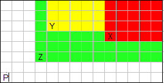
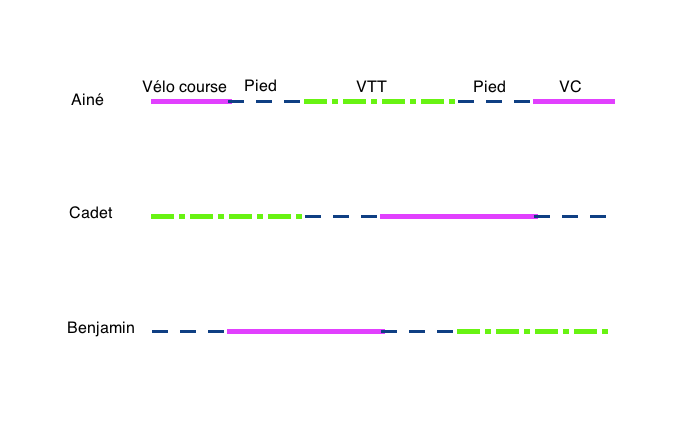

Dans les énigmes suivantes, il vous faut trouver la meilleure stratégie pour répondre au problème posé.
Premier à cent!
Un jour, alors qu'il faisait un long voyage en voiture, Nérosson proposa à sa femme le jeu suivant :
"On va choisir chacun à son tour un nombre entre 1 et 10 et on va l'ajouter au total précédent.
Le premier qui atteint 100 (exactement) a gagné. Allez, je commence."
Ils firent quelques parties, et à chaque fois le bougre gagna. Mais comment faisait-il?
Il faut partir de la fin. Nérosson a joué le dernier nombre et a atteint un total de 100. C'est donc que
sa femme avait obtenu un nombre entre 90 et 99. Pour forcer sa femme à avoir un nombre entre 90 et 99, Nérosson
devait avoir obtenu comme total au coup précédent 89. 89 est donc une position gagnante pour Nérosson.
On remonte encore une fois. Pour qu'il puisse obtenir 89 à coup sûr, c'est que sa femme avait
obtenu un total compris entre 79 et 88. Pour forcer cela, Nérosson devait être arrivé à 78 au coup précédent.
78 est donc une position gagnante pour Nérosson.
On peut facilement continuer à remonter ces calculs, et on va trouver successivement que 67, 56, 45, 34, 23, 12 et 1 sont
des positions gagnantes pour Nérosson. Nérosson va donc jouer 1 comme premier coup pour être sûr de gagner.
Augmentation de salaire
Dans un monde féérique, vous êtes embauché par une entreprise qui vous propose deux types de contrat.
Dans le premier contrat, vous êtes payé chaque mois, et à chaque échéance, vous êtes augmenté de 150 euros. Dans le deuxième contrat,
vous êtes payé deux fois par mois (la première fois bien sûr, moitié moins que pour le premier contrat), et à chaque échéance,
vous êtes augmenté de 50 euros. Quel contrat choisissez-vous?
Contrairement à ce que l'on pourrait imaginer, il vaut mieux choisir le deuxième contrat. Prenons un exemple.
Votre salaire d'embauche est de 1000 euros.
avec le premier contrat, le premier mois vous toucherez 1000 euros, le second mois 1150 euros, le troisième 1300 euros, etc…
avec le second contrat, le premier mois vous toucherez 500+550=1050 euros. Le second mois, vous toucherez 600+650=1250 euros,
le troisième mois, 700+750=1450 euros. En réalité, et contrairement aux apparences, l'augmentation proposée dans le deuxième contrat
correspond à une augmentation de 200 euros par mois!!!
Trois animaux insupportables !
Vincent rentre chez lui accompagne de son chien, de son chat et de la souris.
Ces 3 animaux ne s'entendent pas : le chat mangerait bien la souris, le chien ne s'intéresse pas à la souris
mais règlerait bien son compte au chat. Heureusement, Vincent arrive à imposer son autorité
et quand il est avec eux, rien ne se passe.
Malheureusement, sur le trajet du retour, il doit traverser une rivière
sur laquelle ne se trouve qu'une petite barque où il ne peut transporter avec lui qu'un seul animal à la fois.
Comment va-t-il faire ?
Vincent commence à traverser avec le chat, qu'il laisse sur l'autre rive. Il revient et prend le chien. Il dépose alors le chien et reprend le chat dans sa barque. Arrivé sur la première rive, il dépose le chat et prend la souris, qu'il dépose auprès du chien. Il ne reste plus qu'un aller-retour à faire pour aller chercher le chat.
Ce problème est un grand classique de la théorie des graphes !
Le jeu du croque
Le Croque est un jeu à deux joueurs qui se joue sur une tablette de chocolat.
Le premier joueur choisi un carré et mange tous les carrés situés au dessus et à droite.
Le second joueur choisit ensuite un des carrés qui n'a pas été mangés et mange tous les carrés situés au dessus et à droite.
Puis c'est au tour du premier joueur de choisir un carré.
Le jeu continue jusqu'à ce que l'un des joueurs mange le carré tout en bas à gauche, lequel est empoisonné et ce joueur perd la partie.
Une image valant mieux qu'une longue explication :

Supposons que les cases X, Y et Z soit choisies dans cet ordre, j'ai colorié en rouge, jaune puis en vert toute les cases qui sont retirées.
La case P est la case à ne pas prendre.
Si on a une tablette comportant 2 lignes, et $n$ colonnes, y-a-t-il une stratégie gagnante pour un des deux joueurs?
Enigme posée par Tibo sur le forum.
On peut prouver par récurrence que le premier joueur a une stratégie gagnante. Mais pour cela, il faut en même temps
prouver qu'il y a des positions qui sont perdantes pour le premier joueur qui va jouer. On pose l'hypothèse suivante :
"Le premier qui joue avec une tablette comportant deux lignes de n carrés a une stratégie gagnante.
Le premier qui joue avec une tablette dont la première ligne comporte n-1 carrés et la seconde comporte n carrés a une stratégie gagnante".
On voit bien que ceci fonctionne lorsque n=2. Supposons que c'est vrai jusque n-1, et prouvons l'hypothèse au rang n. On regarde d'abord le cas d'une tablette comportant deux lignes de n carrés. Alors le premier joueur croque le carré en haut à droite (donc un seul carré). Si le second joueur croque un carré de la seconde ligne, alors on se ramène au cas d'une tablette de 2 lignes de k carrés, avec k<n. Donc le premier joueur va gagner.
Le second joueur doit donc croquer un carré de la première ligne (et donc tous les carrés à sa droite). Le premier joueur croque alors le carré situé en dessous juste à droite (et donc tous les carrés à sa droite). Le joueur 2 se retrouve alors dans une situation perdante puisqu'on a une tablette avec $k-1$ carrés sur la première ligne, et $k$ sur la seconde, avec $k<n$.
Considérons maintenant une tablette avec une ligne de n-1 carrés et une deuxième ligne (dessous) de n carrés, et prouvons que le joueur 1 est en situation perdante. S'il croque un carré de la première ligne, le joueur 2 croque le carré en dessous juste à droite, et le joueur 1 est en situation perdante. Si le joueur 1 croque un carré de la seconde ligne, on se retrouve avec une tablette de 2 lignes de k carrés, et on sait que c'est une solution favorable pour le joueur 2.
Bien sûr, on peut tirer de ce raisonnement une stratégie effective pour le joueur 1 : toujours croquer le carré en haut à droite si la tablette est rectangulaire, sinon croquer le carré de la deuxième ligne de sorte que la deuxième ligne comporte un carré de plus que la première.
L'énigme initiale posée par Tibo comportait aussi les questions suivantes :
Existe-t-il une stratégie gagnante si la tablette est carrée?
Existe-t-il une stratégie gagnante pour l'un des deux joueurs s'ils jouent avec une tablette de chocolat de taille quelconque (mais finie)?
A vous de jouer!
Le grenadier et le soldat
Un grenadier est face à 5 trous, alignés de gauche à droite devant lui.
Il désire éliminer un soldat, qui se cache dans l'un des 5 trous.
Le soldat peut passer d'un trou à l'autre sans que le grenadier ne le voit.
Il se déplace systématiquement d'un trou à un trou directement voisin chaque fois qu'une grenade vient d'exploser.
Y a-t'il une stratégie qui permette au grenadier de tuer le soldat ? Si oui, combien de grenades faut-il lancer?
Si oui laquelle, sinon pourquoi ?
Notons 1, 2, 3 , 4 et 5 les trous, et remarquons que si le soldat est dans sa position initiale
dans un trou de numéro pair, il est après le lancer d'une grenade dans un trou de numéro impair (et vice-versa).
Supposons pour commencer que le soldat est dans un trou pair. Le grenadier tire dans 2. L'histoire ne continue que si le soldat était
dans 4. Il va alors ou dans 3, ou dans 5. Le grenadier tire dans 3, le soldat ne s'en sort que s'il était dans 5, il va dans 4,
et le grenadier tire dans 4. Donc, si le soldat est au début dans un trou de numéro pair, la suite 2-3-4 suffit à le tuer.
Imaginons maintenant qu'il soit au départ dans un trou de numéro impair. Si le grenadier effectue la suite
de lancers 2,3,4, alors le soldat, s'il a échappé aux grenades (en fait, c'est toujours oui), et dans un trou de numéro pair.
Il suffit donc de refaire la suite 2-3-4 pour le tuer.
En résumé, on peut toujours tuer le soldat, et il suffit de 6 grenades pour cela, lancées successivement dans
les trous 2,3,4,2,3,4.
Les trois frères
Trois frères sont internes dans le même lycée. Tous les dimanches soir ils ont un train à prendre; celui-ci quitte la gare à 21 heures tapant.
La voiture des parents est en panne. Ils doivent donc se débrouiller avec les moyens du bord. La distance qui sépare leur domicile de la gare est de 16 km.
Il disposent en tout et pour tout d'un vélo de course et d'un v.t.t.
Sachant que le vélo de course avance à 30 km/h , le vtt à 20 km/h , les marcheurs à 6 km/h, à quelle heure doivent-ils partir au plus tard pour qu'aucun des frangins n'ait à camper dans le hall de gare ?
D'après une énigme posée par jpp sur le forum.
Pour optimiser le temps de trajet des 3 frères , on part du principe suivant : dans tous les cas , le vtt , le vélo de course et les chaussures de marche auront parcouru 15 km à leur vitesse propre. Le temps total mis par ces trois moyens de locomotion pour aller du domicile à la gare est donc de
$$\frac{16}6+\frac{16}{20}+\frac{16}{30}=4h.$$
Ces moyens de locomotion étant utilisés par les 3 frères, le temps minimal que peuvent espérer mettre les trois frères est 4/3 d'heure, c'est-à-dire 1h20min.
Maintenant, il faut trouver une stratégie pour échanger les moyens de locomotion. En voici une, en découpant le trajet en sixièmes….

Les prisonniers et les chapeaux
Un groupe de 12 prisonniers doit être exécuté demain.
Les gardes leur laisse une dernière chance de vivre s'ils sont capables de répondre au problème suivant :
les 12 prisonniers sont partagés en deux groupes de 6, qui sont isolés dans deux pièces différentes et ne se voient pas.
On les appellera groupe A et groupe B.
A chaque prisonnier, on donne un chapeau, qui est rouge ou vert. On leur précise aussi que le nombre total de chapeaux de chaque couleur distribué
est pair
(ex: 12 rouges/0 vert, 10 rouges/2 verts, ...).
Le groupe B doit deviner le nombre de chapeaux de chaque couleur pour les deux groupes.
Pour cela, ils ont droit à un procédé en plusieurs temps :
Le groupe A dit le mot "Vrai" ou "Faux" à un garde, qui le transmet au groupe B.
Si le groupe B est incapable de deviner le nombre de chapeaux, alors à nouveau
le groupe A peut transmettre le mot "Vrai" ou "Faux" au groupe B.
Le groupe B doit alors impérativement trouver le bon nombre de chapeaux, sinon, c'est la mort pour tous.
Les prisonniers vont-ils pouvoir s'en sortir?
Notons $V_A$ le nombre de chapeaux verts dans le groupe A, et $V_B$ le nombre
de chapeaux verts dans le groupe B. Les deux groupes conviennent que A dit "Vrai" si $V_A\leq 3$, et "Faux" sinon.
Le groupe B peut alors conclure si on lui transmet "Faux" et que le nombre de chapeaux verts dans le groupe B est impair.
Puisqu'il sait que $V_A\in\{4,5,6\}$ et que $V_A+V_B$ est pair, il sait que $V_A=5$.
Si ce n'est pas le cas, la deuxième information que A transmet est "Vrai" si $V_A\in\{0,1,4\}$ et "Faux" si $V_A\in\{2,3,6\}$.
Ceci permet alors dans tous les cas au groupe B de déterminer le nombre de chapeaux. En effet, si le groupe A a transmis
Vrai puis Vrai, $B$ sait que $V_A=0$ ou 1, et il peut conclure par parité.
Vrai puis Faux, $B$ sait que $V_A=2$ ou 3, et il peut à nouveau conclure par parité.
Faux puis Vrai, $B$ sait que $V_A=4$.
Faux puis Faux, $B$ sait que $V_A=6$.
Le bar de Fred
Chaque vendredi soir, les habitués du forum de la Bibm@th se retrouvent au bar de Fred.
Au bord du comptoir, on trouve 25 chaises alignées.
Comme il déteste cordialement ses congénères, chaque membre suit les règles tacites suivantes :
lorsqu'il arrive, il s'assoit sur la chaise la plus éloignée des chaises déjà occupées, et jamais sur une chaise directement à côté d'un autre membre.
Il préfère alors repartir.
Evidemment, le bar de Fred ne fait pas le plein, et ses finances sont en péril. Alors, vendredi prochain,
lorsque le premier membre arrivera, sur quelle chaise Fred le fera-t-il s'assoir pour optimiser son bénéfice de la soirée?
On va numéroter les chaises de 1 à 25, dans l'ordre où elles sont alignées. Evidemment, le meilleur remplissage possible
du bar de Fred est 13 chaises. Il faut bien comprendre l'énigme et tenir compte du fait qu'en général, on n'obtient pas 13 personnes qui s'assoient.
Par exemple, si le premier s'assoit sur la chaise 1, le second ira sur la chaise 25, le troisième sur la chaise 13,
le quatrième sur la chaise 7 (ou 19), le 5ème sur la chaise 19, puis les 6è, 7è, 8è et 9è iront sur les chaises 4,10,16,22, et puis c'est tout…
Il n'y a que deux solutions qui garantissent que les 13 sièges seront remplis : choisir d'abord le siège n°9 ou le siège n°17.
L'électricien
Un électricien installe un câble souterrain de 10 fils pour relier 2 bâtiments visuellement isolés. Il se rend compte qu'il a oublié de marquer les fils. Il dispose d'une batterie et d'une ampoule (ou d'un testeur de continuité), d'un jeu de domino pour relier les fils, ainsi que des étiquettes pour les marquer.
Comment peut-il repérer les fils qui correspondent de chaque coté du câble en seulement un aller-retour?
Enigme postée sur le forum par ouni anouar
Dans le premier immeuble, il relie 4 fils ensemble dans un premier domino, il étiquette ces fils 4, il relie 3 fils ensemble
dans un second domino, il étiquette ces fils 3, il relie 2 fils ensemble dans un troisième domino, il étiquette ces fils 2, puis il laisse un fil
seul, sur lequel il met une étiquette 1.
Il se rend dans le second immeuble, et il détecte facilement les 4 fils qui sont dans le même domino (il les étiquette 4),
puis les 3 fils qui sont ensembles (il les étiquette 3), et ainsi de suite. Il enlève ensuite les dominos, et prend le fil étiqueté 1, un fil étiqueté
2, un fil étiqueté 3, un fil étiqueté 4. Il les relie ensemble dans un domino, et leur ajoute une étiquette 4. Il fait de même avec 3 fils, un étiqueté 2, un étiqueté 3, et un étiqueté 4. Il leur ajoute une étiquette 3. Et ainsi de suite. Il part donc du second immeuble avec des fils étiquetés 1-4, 2-4, 2-3, 3-4, 3-3, 3-2, 4-4, 4-3, 4-2, 4-1.
A son retour dans le premier immeuble, il teste à nouveau les fils reliés ensembles, et il leur adjoint l'étiquette correspondante.
Les fils sont alors étiquetés de la même façon dans chaque immeuble (et de façon unique!).
Échange de verres
Après un match de football bien disputé, les joueurs de Lille et de Marseille se retrouvent au bar de Fred. Celui-ci a préparé le long du comptoir une file de 22 verres à moitié remplis : 11 verres de bière
pour les joueurs de Lille, 11 verrres de pastis pour ceux de Marseille. Soudain, il se rend compte de sa bévue. Les verres à l'écusson de Lille sont remplis
de pastis, ceux à l'écusson de Marseille de bière. N'écoutant que son courage, il se décide à procéder à l'échange le plus rapidement et le plus discrètement possible, sans utiliser d'autres verres.
En particulier, il va respecter les règles suivantes :
on ne mélange jamais les contenus !
un verre à moitié plein peut être vidé dans un verre vide ou un autre verre à moitié plein
le contenu des verres plein peut être vidé complètement ou à demi dans des verres vides.
De combien de manoeuvres au minimum va-t-il avoir besoin ?
D'après le livre Double détente de Bernard Novelli.
On se rend très vite compte qu'il faut au moins 22 manoeuvres, puisque le contenu de chaque verre doit être vidé au moins une fois. De plus, 22 manoeuvres ne sera pas suffisant. Une fois qu'on a fait la première manoeuvre (mettre le contenu d'un verre dans un autre), il faudra encore faire au minimum 22 manoeuvres (vider les 21 autres verres, et vider au moins la moitié du contenu du verre plein dans un autre verre). Donc il faut au moins 23 manoeuvres. Reste à trouver une solution avec exactement 23 manoeuvres.
On note $L_1,\dots,L_{11}$ les verres à l'écusson de Lille, et $M_1,\dots,M_{11}$ les verres à l'écusson de Marseille On commence par vider $L_1$ dans $L_2$. $L_1$ devient vide. Puis on vide $M_1$ dans $L_1$, $M_1$ devient vide. On a donc fait $2$ opérations.
On vide ensuite $L_2$ entier dans $M_1$, et $L_2$ devient vide : cela fait $1$ opérations.
On vide ensuite $M_2$ dans $L_2,$ puis $L_3$ dans $M_2$, puis $M_3$ dans $L_3$, etc ..., jusque $L_{11}$ dans $M_{10}$ et $M_{11}$ dans L_{11}$. Cela fait $19$ opérations (10 vidages de verre $M$ et $9$ vidages de verre $L$).
La dernière étape consiste à vider à moitié le verre $M_1$ dans $M_{11}$. Cela permet de conclure l'échange et on a effectué au total $2+1+19+1=23$ opérations.
Si on était parti de $n\geq 2$ verres au lieu de $11$ verres, il aurait fallu $2n+1$ opérations.
Les mafiosi et le butin de cocaine
Nous sommes en Sicile. 5 membres d'une famille de mafiosi
doivent se partager un butin de 512kg de cocaine.
Nous sommes en Sicile, et le respect des anciens fait que c'est au plus âgé de
proposer un partage de ce butin. Mais attention, il faut que au moins 50%
des autres mafiosi soient d'accord. Sinon, il reçoit une balle dans la tête, et les 4 autres mafiosi se partagent alors
le butin restant.
On fait les hypothèses suivantes :
les mafiosi disposent d'une balance précise au kg près;
les mafiosi aiment l'argent, leur but est d'obtenir le gain le plus élevé possible;
les mafiosi aiment la vie, ils n'ont aucune envie d'être tués;
les mafiosi sont très intelligents et agissent de façon rationnelle;
les mafiosi sont cruels : à gain égal, ils tueront l'ainé!
Combien de mafiosi vont mourir? Quel va être le partage entre les mafiosi restant en vie?
Dans ce type de problème, le plus simple est de raisonner par la fin :
le dernier mafiosi, s'il est seul, empoche tout.
le 4ème mafiosi sait que, si son tour arrive de faire le partage,
le 5ème sera systématiquement en désaccord, puisque seul il empochera le butin.
Sa stratégie est donc de dire systématiquement oui au 3ème mafiosi, afin d'être épargné.
Le 3ème mafiosi, si son tour arrive, sait que le 5ème sera en désaccord (il veut être seul).
Mais le 4ème sera en accord avec tout partage, qui lui évitera la mort.
Le 3ème mafiosi propose donc de tout garder.
Le 2ème mafiosi, si c'est sont tour, doit acheter deux des trois autres mafiosi.
Il ne peut pas acheter 3, qui gagne tout si vient son tour. Il achète donc les deux autres
en leur proposant un kilo de cocaine, ce qui vaut mieux que rien du tout.
Le 1er mafiosi, au moment de faire le partage, doit acheter au moins deux des autres.
Il ne peut pas acheter le deuxième mafiosi, qui empocherait presque tout si vient son tour.
Mais il peut acheter le 3ème en lui proposant un kilo de cocaine, et le 4ème en lui proposant deux kilos,
ce qui est (strictement) mieux que ce qu'ils pourraient obtenir si c'est le 2ème mafiosi qui propose le partage.
Le premier mafiosi empoche donc 509kg, le 3ème un kilo, et le 4ème deux kilos.
Prédire sans rien voir !
Deux amis ont chacun deux pièces équilibrées (chacun a une pièce rouge et une pièce bleue). L'un est à Paris l'autre à New York. Au même moment ils lancent chacun leurs deux pièces (chacune est donc sur pile ou face avec probabilité 1/2). Chacun constate ses propres lancers, puis envoie une lettre rouge ou bleue à son ami (ils envoient ces lettres au même moment sans avoir communiquer). Quelques jours plus tard, les deux amis reçoivent la lettre colorée de l'autre. Chacun regarde alors si sa pièce de la couleur indiquée par la lettre reçue est sur face. Ils gagnent si les deux prédictions sont justes, ils perdent si au moins l'une des deux prédictions est fausse.
Ainsi le but pour les deux est de prédire la couleur d'une pièce de son ami qui serait sur face, tout cela sans rien voir!
Ex :
À Paris, la pièce rouge est sur pile et la pièce bleue est sur face : le Parisien décide d'envoyer une lettre rouge
À New York, la pièce rouge est sur face et la pièce bleue est sur pile : le New-Yorkais décide d'envoyer une lettre rouge.
La prédiction du Parisien est correcte car la pièce rouge du New-Yorkais est bien sur face. Mais la prédiction du New-Yorkais est fausse car la pièce rouge du Parisien est sur pile. Ainsi dans cette configuration les deux amis ont perdu.
A priori, si chacun choisit la couleur de sa lettre au hasard, alors il y aura une chance sur quatre que les deux amis soient victorieux.
Trouvez une stratégie qui leur donne une chance plus grande (strictement) de gagner !
Énigme proposée par Glozi sur le forum !
Chacun envoie une lettre rouge si sa pièce rouge indique face, et une lettre bleue sinon. Avec ce choix, la probabilité de gagner est $\frac 14+\frac1{16}$. En effet, les amis gagnent si pour tous les deux leur pièce rouge est sur face, ce qui arrive avec une probabilité $1/4$. Ils gagnent également si leurs deux pièces rouges sont sur pile, et leur deux pièces bleues sont sur face, donc avec probabilité $1/16$.
Le far-west
Nous sommes dans le Far-West.
Cent condamnés à mort attendent leur exécution pour le lendemain.
Leur bourreau vient leur rendre visite et leur explique le détail de l'exécution.
Il seront tous placés, les uns derrière les autres, avec des chapeaux blancs ou des chapeaux noirs.
Le bourreau commencera par interroger le dernier de la file, lui demandant la couleur de son chapeau. S'il répond juste,
il est sauvé. S'il se trompe, il est mort. Le procédé est ensuite répété
pour chaque prisonnier.
Les condamnés ont une nuit pour trouver une méthode
pour sauver le plus grand nombre d'entre eux (ce n'est pas eux qui choisiront le chapeau sur leur tête).
Combien pouvez-vous en sauver, sachant que chaque prisonnier
voit bien sûr la couleur des chapeaux qui sont devant lui et
entend la réponse des prisonniers qui sont derrière lui?
Le dernier condamné, voiyant le chapeau de tous les autres sauf le sien, compte par exemple le nombre de chapeaux blancs.
- S'il en voit un nombre pair, il dit "blanc".
- S'il en voit un nombre impair, il dit "noir"!
Il a une chance sur deux de mourir ainsi.
L'avant dernier condamné voit lui tous les chapeaux qui le précèdent. Supposons qu'il voit un nombre pair de chapeaux blancs :
- si le dernier condamné a dit "blanc", c'est qu'il voyait lui aussi un nombre pair de chapeaux blancs. L'avant-dernier condamné dit
donc "noir".
- si le dernier condamné a dit "noir", c'est qu'il voyait lui un nombre impair de chapeaux blancs. Le chapeau de l'avant-dernier condamné est donc blanc, ce qu'il dit.
Bien sûr, la situation est symétrique s'il voit un nombre impair de chapeaux blancs. L'avant-dernier condamné est sauvé!
On peut remonter ainsi toute la file, car on dispose toujours de l'information : "parité du nombre de chapeaux blancs que voyait le
condamné disposé derrière dans la file". Tous les condamnés vont donc être sauvés, sauf éventuellement le dernier...
Test d'embauche chez Microsoft
On dispose de deux boules en verre parfaitement identiques. On peut les lancer
d'un gratte-ciel de 100 étages, et on souhaite savoir à partir de quel étage
les boules cassent lorsqu'elles tombent au sol.
Quelle est la stratégie optimale pour effectuer, dans le pire des cas, le moins de lancers
possibles sachant que l'on ne dispose que de deux boules et que si
l'une casse, il faut déterminer l'étage avec l'autre, sans jamais la casser
avant l'étage fatidique ?
Cette énigme était une question utilisée autrefois dans les tests d'embauche chez
Microsoft. Et la légende dit que les spécialistes de la firme américaine ne proposaient pas la solution
optimale !
Soit $k_1$ l'étage auquel on lance la première boule :
si elle casse, il faudra tester tous les étages de 1 en 1 à partir du premier, jusque, au pire, le $(k_1-1)$-ième.
Ainsi, on réalise dans ce cas au pire $k_1$ lancers.
si elle ne casse pas, on la lance de l'étage $k_1+k_2$. Si elle casse, il faut tester tous les étages de 1 en 1 à partir de $k_1+1$, soit au pire $k_2-k_1+1$ lancers (ne pas oublier le premier).
Par symétrie, le cas optimal est réalisé si $k_1=k_2-k_1+1$, soit $k_2=k_1+(k_1-1)$.
Ainsi, si on lance la première fois du $k$-ième étage, on lancera la 2ème fois du $k+(k-1)$ ième étage, la troisième fois du $k+(k-1)+(k-2)$ ième etc...
Il faut déterminer $k$ qui donne le nombre d'essais dans le pire des cas. C'est le plus petit entier tel que $k+(k-1)+(k-2)+...+1>=100$. D'après la formule pour calculer la somme des premiers entiers, $k$ est le plus petit entier tel que $k(k+1)/2 >=100$. On trouve $k=14$.
Ainsi, il faut au pire 14 essais.
Pour l'anecdote, les gens chargés de l'embauche chez Microsoft proposaient de lancer la première fois du 10ème étage, la 2nde fois du 20ème, etc... Dans le pire des cas, cela fait 19 essais!
Les concierges
Par diverses rumeurs, des concierges d'immeubles de très grand standing ont eu connaissance du dernier scandale qui secoue la ville de New-York.
Chacune dispose d’informations très partielles qui ne se recoupent pas nécessairement entre elles. Toutes réunies, elles parviendraient à reconstituer l’histoire complète de ce scandale.
Au cours de conversations téléphoniques exclusivement bilatérales, elles échangent toutes les informations en leur possession et à l’issue d’un nombre minimal de cent appels téléphoniques, elles parviennent à tout savoir du scandale. Combien y avait-il de concierges au maximum?
Enigme suggérée par Freddy sur le forum
Voici la meilleure stratégie obtenue, permettant de mettre en commun les informations de 52 concierges. Notons n le nombre de concierge (n>3).
Formons deux groupes G1 et G2 de taille m et p tels que m+p=n.
La concierge X de G1 appelle un à un tous les éléments de G1 et finit par Y; La concierge Z de G2 fait de même avec toutes les concierges de G2 et finit par T. Donc m-1 et p-1 appels. Puis X joint Z et Y joint T. Soit n appels et 4 concierges parfaitement informées. Elles doivent ensuite passer n-4 appels pour informer tout le monde, soit 2n-4. On doit donc avoir $2n-4\leq 100$, soit $n\leq 52$.
Le test à piles - problème ouvert
Une puissante lampe de poche fonctionne avec 4 piles type LR03 de 1,5 volt. Si l'une d'elles est défaillante, la lampe ne fonctionne plus.
En préparant mon sac pour faire de la spéléo le prochain WE, je me mets à chercher des piles neuves pour cette lampe. Je me souviens que ma femme, particulièrement ordonnée, avait rangé dans le même tupperware 16 piles du modèle souhaitées, mais en avait par mégarde mélangé 8 neuves avec 8 défaillantes.
Partie chez sa mère pour 15 jours, je me retrouve bien embarrassé. Comment trouver parmi ces 16 piles 4 piles en bon état de fonctionnement
en un nombre minimum d'essais.
Je ne connais pas le nombre minimal d'essais nécessaires, mais voici une stratégie nécessitant au plus 60 essais.
On commence par partager les piles en 8 paquets de 2, et on teste
tous ses paquets 2 à 2. Cela fait $\binom{8}{2}=\frac{8\times 7}{2}=28$ essais.
Si ca marche, c'est ok.
Sinon, on est nécessairement dans un des deux cas suivants :
1. Tous les paquets comportent une pile bonne et une pile mauvaise.
2. Un paquet comporte deux piles bonnes, un paquet comporte deux piles mauvaises, et les 6 autres comportent une pile bonne, une pile mauvaise.
On isole alors 4 paquets de 2 piles, et on teste toutes les choix possibles :
une pile du paquet 1, une pile du paquet 2, une pile du paquet 3, une pile du paquet 4.
Ca fait 2^4=16 essais.
Si on a trouvé 4 piles qui fonctionnent, c'est ok.
Sinon, c'est que forcément, dans ces 4 paquets de pile, on a un paquet de 2 mauvaises piles.
Mais alors, comme dans ces 8 paquets, il y en a au plus un avec deux mauvaises piles,
on considère les 4 autres paquets de 2 piles, et on fait les 2^4=16 mêmes essais.
Au cours de ces essais, on est sûr de trouver 4 piles qui conviennent.
Il faut donc au plus 28+16+16=60 essais.